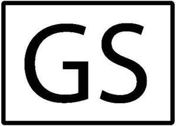

Trade Mark Journal No.2026/006 6 February 2026
UK00004320491 7 January 2026 (6,20)
Mark 1
GS
Mark 2

- Class 6
- Fasteners and fastening devices; grommets (metal -); drawer runners of metal; runners of metal for sliding doors; metal runners for sliding doors; drawer sliders of metal; drawer guides of metal; drawer knobs of metal; drawer handles of metal; drawer gliders of metal; common metal drawer pulls; metal drawer trim; fitted liners for metal baskets; door holders of metal; metal cabinet door catches; ball catches of metal; catches (window -) of metal; catches (door -) of metal; catches (furniture -) of metal; ties of metal for tying; metal ties; cables ties of metal; ties of metal for binding; zip ties of metal; ties of metal for use in building; metal ties for use in building; wall ties of metal; ties of metal for use in brickwork; apex ties of metal; tie wire of metal for binding; tie plates; tie wire of metal; stud rails of metal for flats; metal studs [other than for football boots, clothing or vehicle tyres]; studding of metal; metal cabinet stops; shelf dividers of metal [other than parts of furniture]; screw-in insert nuts of metal; screw nuts of metal; threaded nuts of metal; lock nuts of metal; nuts of metal; metal nuts; nuts, bolts and fasteners, of metal; screw-in nuts of metal; pipe nuts of metal; wing nuts of metal; screw bolts of metal; nuts [metal hardware]; bolts (lock -); lock bolts; screw threaded fasteners of metal; self-tapping metal bolts; lock bolts of metal; metal hexagon head bolts; anchor bolts of metal; hinges of metal; metal hinges; door hinges of metal; window hinges of metal; hinges for doors and windows (metal -); floor hinges of metal; hinge clamps of metal; hinges of metal incorporating a spring; hinges of metal for the fixing of pipes; hinges of metal having a spring action; latches (metal -) being fittings for doors; metal door latches; hinges of metal for the fastening of electrical cables; metal bolts for locking doors; metallic frames for sliding doors; door levers of metal; metal sliding doors; handles of metal for doors; door fasteners of metal; locking gate hasps of metal; rollers (metal -) for sliding doors; door handles of metal; metal door handles; metal components for doors; revolving doors of metal; hooks (door -) of metal; door jambs of metal; frames of metal for doors; metal locks for doors; door flaps of metal; latches (metal -) being fittings for windows; pivots of metal; tilting metal doors; metal door frames; door frames of metal; shutter doors of metal; metal panels for doors; panels of metal for doors; door lever furniture of metal; door hardware (metal -); metal folding doors; folding doors of metal; latches of metal; door friction stays of metal; door seals of metal; aluminium doors; door panels of metal; metal door bolts; door bolts of metal; bolts (door -) of metal; metal doors; doors of metal; door knobs of common metal; patio doors (metal framed -); fittings of metal for doors; metal locking mechanisms; door pulls of metal; swing doors of metal; sliding doors of metal for buildings; metal roller shutter doors for security purposes; metal gate latches; roller doors of metal; locking pins of metal; keys (metal -) for opening locks; door fittings, of metal; door fittings of metal; door knockers of metal; knockers (door -) of metal; glazed doors of metal; ironwork for doors; door pushes of metal; door springs of metal, non-electric; roll doors of metal; safety fittings of metal for doors; door cases of metal; knobs of metal; metal knobs; metal doorknobs; metal furniture sliders; crank pins of metal; metal door trim; metal door trims; ferrules of metal for handles; handles (ferrules of metal for -); pots hooks of metal; pegs [pins] of metal; pins [pegs] of metal; pins [metal hardware]; caps (metal -) for screws; escutcheons of metal; metal keys for locks; locks and keys, of metal; brass wires; pins [hardware]; tension levers of metal; faceplates of metal; adjusting shims [metal]; screws of metal; washers [metal hardware]; metal handles; binding screws of metal for cables; radiator valves of metal [other than thermostatic]; metal cable clips; cable clips of metal; clips (cable and pipe -) of metal; clips of metal for cables and pipes; cables and pipes (clips of metal for -); cable clamps of metal; cable straps of metal; clips of metal for tubes; metal cable wire; metal clips; cable stretchers; cable connectors (non-electric -) of metal; metal cable tensioners for boats; cable thimbles of metal; cable grips of metal; clip clamps of metal; trunking [channels] of metal for electric cables; cables, wires and chains, of metal; cable boxes of metal (non-electric -); metal bolts [fasteners]; clevis fasteners of metal; metal threaded fasteners; thumbscrews [fasteners] of metal; sash fasteners of metal; metal fasteners for scaffolds; fasteners of common metal; architectural fasteners of metal; blind bolt fasteners of metal; snap rings [fasteners] of metal; metal window fasteners; window fasteners of metal; machine belt fasteners of metal; sash fasteners of metal for windows; metal sash fasteners for windows; window sash fasteners of metal; fasteners of metal for casement windows; self-tapping metal screws; screw rivets of metal; collars of metal for fastening pipes; fastening pipes (collars of metal for -); metal fastening anchors [for securing pictures to walls]; joist clamps of metal; bolts of metal; clevis pins of metal; flanges of metal [collars]; rivets of metal; casement bolts (metal -); anchor flanges of metal; clevises of metal; metal flanges; metal expanding sleeves for affixing screws; bolt snaps of metal; fixing bolts of metal; reinforcing pins of metal for formwork; metal hose fittings; metal joinery fittings; fittings of metal for pipes; metal pipe fittings; fittings of metal for furniture; furniture (fittings of metal for -); pipe fittings [junctions] of metal; pipes, tubes and hoses, and fittings therefor, including valves, of metal; cupboard fittings of metal; bulkhead fittings of metal [other than vehicles]; buildings (fittings of metal for -); fittings of metal for buildings; beds (fittings of metal for -); fittings of metal for beds; wardrobe rail fittings of metal; fittings of metal for building; fittings of metal for windows; windows (fittings of metal for -); metal fittings for windows; fittings of metal for coffins; cabinet fittings of common metal; ring-shaped fittings of metal; metal security lock cylinders; security shutters of metal; locks of metal; metal locks for windows; security closures of metal; metal sash locks; spring locks; screw caps of metal; set screws of metal; brackets of metal for furniture; plugs [dowels] of metal; cremone bolts of metal for windows; expansion bolts of metal; lock washers of metal; furniture ferrules of metal; window casing bolts of metal; screw cups of metal; metal caps for bottles; eye bolts of metal; metal eye bolts; flat bolts; bolts, flat; screw rings of metal; screw covers of metal; self-tapping metal plugs; anchor socket tube sections of metal; collapsible tubes of metal; tubes of metal; metal tubes; connectors of metal for tubes; metallic tubes; steel tubes; pipe tubes of metal; flexible tubes of metal; couplings of metal for tubes; joints for tubes (metal -); metal tubes for gas; pipes and tubes of metal; metal pipes and tubes; metallic pipes and tubes; tubes of stainless steel; parts and fittings for all the aforesaid goods; none of the aforesaid goods used on or in relation to automotive vehicles; none of the aforesaid goods being parts or fittings for automotive vehicles.
- Class 20
- Grommets made of plastics materials; non-metal catches; gravity catches (non-metallic -); catches, not of metal; ball catches [not of metal]; catches (door -), not of metal; catches (furniture -), not of metal; drawer runners (non-metallic -); drawer organizers; drawer dividers; curtain runners; drawer fronts; drawers; runners (non-metallic -) for sliding doors; drawer pulls of wood; drawer pulls of porcelain; drawer sliders (non-metallic -); drawer knobs (non-metallic -); drawer pulls of plastic; dividers for drawers; runners, not of metal, for sliding doors; drawer guides (non-metallic -); drawer pulls of glass; drawer pulls of earthenware; drawer handles (non-metallic -); drawer slides [furniture hardware]; drawer gliders (non-metallic -); non-metal drawer trims; drawer pulls, not of metal; chests of drawers; ceramic pulls for drawers; ceramic pulls for cabinets, drawers and furniture; drawers for furniture; plastic drawer lining material; storage drawers [furniture]; desk tops; fronts of cupboards; shelves for file cabinets; shoe racks; cupboards; wall cupboards; desk racks [furniture]; bedside cabinets; rack bars for shelves [non-metallic]; shelf dividers (non-metallic -); kitchen dressers; ceramic pulls for cabinets; metal drawers [parts of furniture]; boot trays [furniture]; drawers [furniture parts]; drawers as furniture parts; box shelves; plate racks [furniture]; kitchen cupboards; cupboard doors; shoe organisers; benches with shelves; non-metal cabinet door catches; stacking trays of wood; slide closers (non-metallic -) for containers; hangers (non-metallic -) for shelves; plastic garage door rollers; front plate knobs (non-metallic -); metal storage cabinets; kitchen cabinets; closet organisers [parts of furniture]; cabinets; shelf dividers of metal [parts of furniture]; storage cupboards [furniture]; pedestal cabinets; combined stoppers for containers [non-metallic and not for household or kitchen use]; threaded nuts of plastic; screw nuts, not of metal; screw-in nuts, not of metal; nuts [fasteners], not of metal; screw inserts, not of metal; nuts, not of metal; non-metallic nuts [fasteners]; self-locking protective plastic caps for use with nuts; screw bolts, not of metal; wing nuts (non-metallic -); decorative nut caps [non-metallic]; screw threaded fasteners, not of metal; threaded screws of plastic; self-locking protective plastic caps for use with bolts; lock bolts, not of metal; toggle bolts (non-metallic -); anchor bolts, not of metal; bolts, not of metal; screw caps, not of metal; threaded fasteners made of plastic; screw cups, not of metal; screw bushings, not of metal; socket head cap screws, not of metal; screw covers, not of metal; plugs [dowels], not of metal; stripper bolts (non-metallic -); self-tapping non-metallic bolts; feet for furniture; feet (non-metallic -) for furniture; feet for display stands (non-metallic); feet for display boards (non-metallic); door hinges (non-metallic -); non-metal hinges; hinges, not of metal; hinges for doors and windows (non-metallic -); floor hinges, not of metal; hinges, not of metal incorporating a spring; door hinge guards (non-metallic -); hinges, not of metal for the fixing of pipes; hinges, not of metal having a spring action; hinges, not of metal for the fastening of electrical cables; hinge clamps of non-metallic materials; non-metal door latches; door fasteners, not of metal; wood door handles; rails (non-metallic -) for sliding doors; door handles, not of metal; handles (door -), not of metal; sliding doors for furniture; clamps (non-metallic -) for fixing doors; rollers (non-metallic -) for sliding doors; wardrobe sliding doors; bolts (door -) not of metal; door bolts not of metal; door bolts, not of metal; rails (non-metallic -) for folding doors; transparent doors (metal framed -) for furniture; mechanisms (non-metallic, non-electric -) for locking doors; mechanisms (non-metallic, non-electric -) for sliding doors; locking gate hasps [non-metallic]; non-metallic sliding doors for furniture; latches, not of metal; door knockers, not of metal; door knockers not of metal; handles made of plastics for doors; door fittings, not of metal; fittings, not of metal (door -); tiltable doors of metal [parts of furniture]; plastic hardware for blinds; door springs, not of metal, non-electric; porcelain knobs; wood knobs; ceramic knobs; plastic knobs; glass knobs; non-metal knobs; knobs, not of metal; door handles of porcelain; wood doorknobs; porcelain doorknobs; metal cabinets; plastic doorknobs; glass doorknobs; non-metal furniture sliders; porcelain window handles; non-metal cable clips; ribbon cable (plastic clips for -); cable or pipe clips of plastic; non-metal pipe and cable clips; clips (cable and pipe -) of plastics; cable clips made of plastics; clips, not of metal, for cables and pipes; clips made of plastics for cables; non-metal cable clamps; hose clips (non-metallic -); clips of plastic for tubes; cable fasteners, connectors and holders, non-metallic; plastic fittings [clips] for attachment to tubing; splice connectors (plastic -) for non-electric cables; stair clips (non-metallic -); non-metallic fasteners; fasteners, non-metallic; fasteners of plastic; non-metal threaded fasteners; non-metallic fasteners for cables; non-metallic fasteners for pipes; window fasteners (non-metallic -); blind bolt fasteners of non-metallic materials; turn-button fasteners (non-metallic -); stud buttons [fasteners] of plastic for tentage; pipe fasteners, connectors and holders, non-metallic; architectural fasteners of non-metallic materials; self-drilling non-metallic bolts; self-drilling screws in non-metallic materials; thumbturns [fasteners], not of metal; self-tapping non-metallic screws; window fasteners, not of metal; threaded rivets of plastic; sash fasteners, not of metal for windows; sash fasteners, not of metal, for windows; collars [non-metallic] for fastening pipes; casement bolts (non-metallic -); collars of plastic for fastening pipes; non-metal fastening anchors for securing pictures to walls; non-metal rivets; clamps (non-metallic -) for fixing awnings; industrial rivets of non-metallic materials; caps (non-metallic -) for screws; self-drilling non-metallic plugs; clamps (non-metallic -) for fixing pleated blinds; non-metallic pegs [pins]; concealed fastening devices of non-metallic materials; clamps (non-metallic -) for fixing blinds; collars, not of metal, for fastening pipes; screw rivets, not of metal; fittings for curtains; curtain fittings; non-metallic fittings for furniture; shop fittings (non-metallic -); fittings (non-metallic -) for cupboards; fittings (non-metallic -) for cabinets; stair fittings of plastics; cupboard fittings (non-metallic -); stacking adaptors non-metallic fittings; curtain suspension fittings; bathroom fittings in the nature of furniture; non-metal door fittings; beams for display fittings; springs being non-metallic fittings for upholstery; furniture fittings, not of metal; fittings, not of metal (furniture -); display fittings [furniture] of metal; non-metal bed fittings; shop display fittings, (non-metallic -); door fittings made of plastics; corner fittings (non-metallic -) for containers; fittings, not of metal, for blinds; cabinet fittings [not of metal]; security cabinets; locks and keys, non-metallic; keys (non-metallic -) for opening locks; safety locks [non-metallic, non-electric]; wood screws (non-metallic -); non-metal door bolts; shelf brackets (non-metallic -) being parts of furniture; cremone bolts of non-metallic materials for locks; brackets (non-metallic -) for furniture; screws, not of metal; shackle bolts, not of metal; square set screws of non-metallic materials; clamps (non-metallic -) for fixing windows; plastic caps; binding screws, not of metal, for cables; plastic covers for metal hose clamps; cremone bolts, not of metal for windows; set screws, not of metal; racks being furniture of metal; non-metallic hooks for furniture; plastic washers; brackets, not of metal, for furniture; furniture locks (non-metallic -); tube plugs (non-metallic -); plastic clips for sealing bags; clips of plastic for sealing bags; parts and fittings for all the aforesaid goods; none of the aforesaid goods used on or in relation to automotive vehicles; none of the aforesaid goods being parts or fittings for automotive vehicles.
Jet Press Limited
Representative: Swindell & Pearson Limited